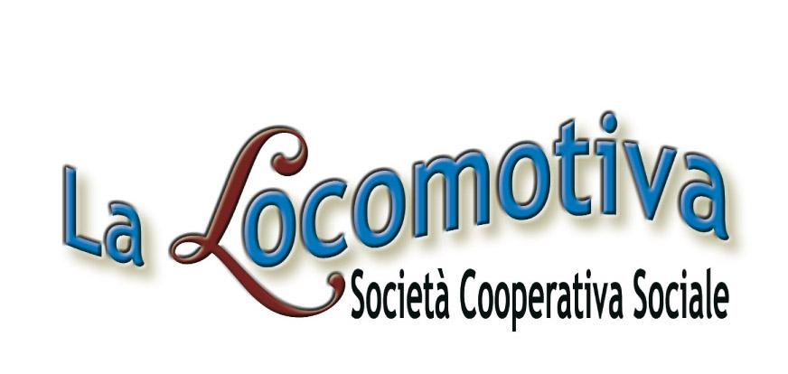
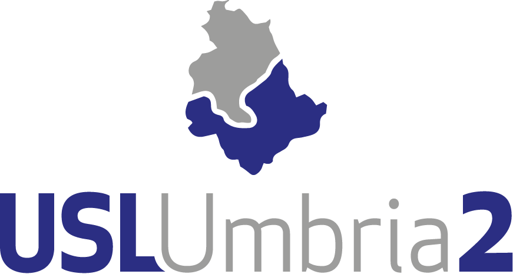
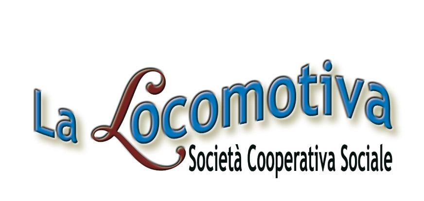
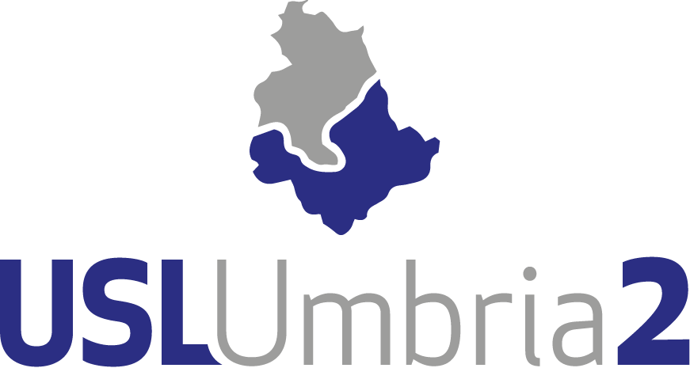
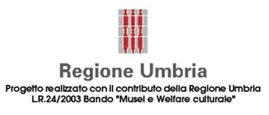
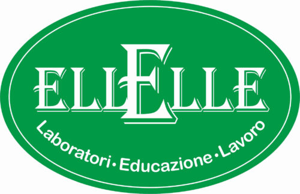
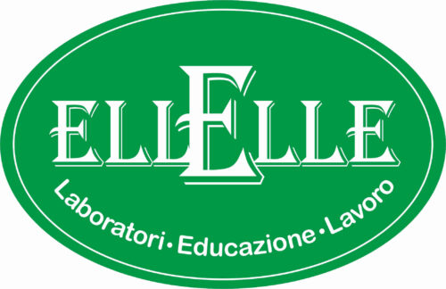
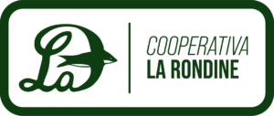
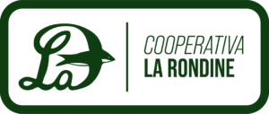
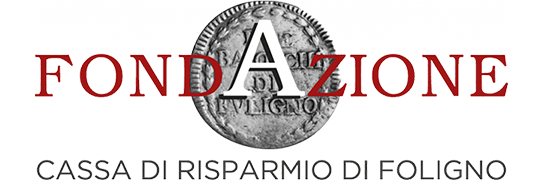

Objectives
To make cultural places and works of art usable, inclusive and accessible to the widest possible public.
Results
The tangible results, co-constructed by the beneficiaries themselves and which made the museums accessible, are:
- The production of a guide of the Diocesan Museum of Foligno in Easy to Read.
- The production of a photographic guide of the Museum.
- A virtual reworking of the museum spaces in Mozilla Hubs.
- The recipients and protagonists of the project are users with cognitive disabilities and autism spectrum disorders.
Status
Concluded:
- the first project at the Museo Capitolare Diocesano in Foligno
- Viaggio alla Scoperta dei Borghi along the Strada del Sagrantino
In work in progress:
- the project at the CIAC Foligno Pole and the ArteMIA Guide.
ArteMIA-Art for Inclusion and Accessibility - Visiting Guide to the Diocesan Chapter Museum in Foligno
The ArteMIA Project was an itinerary of discovery and accessibility to the cultural heritage centred on the works housed in the Diocesan Museum of Foligno through photographic art-therapy workshops. The tangible results, available in italian only, co-constructed by the beneficiaries themselves and which made the Museum accessible, are:
The recipients and protagonists of the project are users with cognitive disabilities and autism spectrum disorders.
Partners:


 



Founded by: 
ArteMIA-Art for Inclusion and Accessibility - Journey to the Discovery of the Villages along the Sagrantino Wine Route
The aim of the Project ArteMIA- Viaggio alla Scoperta dei Borghi lungo la Strada del Sagrantino is to create an Accessible Itinerary for and with people with cognitive disabilities, to discover the lands and villages that belong to the Sagrantino territory. Participants will be accompanied to get to know and discover the most important and representative places of culture located in the municipalities of Montefalco, Bevagna, Giano dell'Umbria and Gualdo Cattaneo, contributing in the first person to the promotion of one of the most beautiful and characteristic areas of the Region of Umbria.
An Italian-only guide has been created and can be found at the following link:
Partners:
 

 

Founded by:

The intervention was realised with the support of the ‘Funds for the support of projects in the field of cultural welfare year 2023’ ‘ERDF PR 2021-2027. Az. 1.3.4.- Support for tourism, tourism services, film, audiovisual, cultural and creative and social enterprises’.
ArteMIA-Art for Inclusion and Accessibility - Guide to CIAC Poles
The objective of the ArteMIA Project-Guide to the CIAC Poles is to create an Accessible Itinerary for and with people with cognitive disabilities, to discover the works housed within the CIAC and the Cosmic Magnet, permanently exhibited at the Former Church of the Holy Trinity in Annunziata. The proposal to create a Guide/Itinerary of the CIAC poles stems from the desire to open the museum spaces to the widest possible public and from the awareness that, too often, Contemporary Art is left aside because it is considered too complex or elitist. The realisation of the Accessible Guide allows not only to bring new audiences to the museums, but also to create a product that can potentially be used by everyone to guide and inform them in their discovery of the CIAC.
Two Italian-only guide have been created and can be found at the following link:
Partners:

Founded by: 